Vos artisans de confiance en Algérie. An Android app that connects households with local plumbers, electricians, painters and other artisans.
BOUBAYA Mohamed (leader) · MESLEM Youcef · DERGHAL Arslane Yassine · G10
The MVP is a working Flutter app, not a mock-up: accounts, provider profiles, service requests, request statuses, favourites and reviews are real data, saved on the phone and kept after the app is closed. It implements the 20 screens of the validated specification (24 Oct 2026) and its three core rules.
flutter run), tap Commencer, then on the login screen tap Client under "Comptes de démonstration" and Se connecter. Password for all demo accounts: fixy1234.| # | Feature (spec §4.2) | What works | Status |
|---|---|---|---|
| F1 | Splash, onboarding & auth | Animated splash, 3 swipeable slides, sign-up (name, phone, optional e-mail, password) and login by phone or e-mail, Client / Prestataire choice. Input validated (Algerian mobile format, password ≥ 6). | Delivered |
| F2 | Client home & categories | Greeting, location selector from saved addresses, search bar + filter button, the 8 trades, popular artisans, 4-tab navigation. | Delivered |
| F3 | Search results & filters | Cards with photo or default avatar, trade, rating, commune, phone, "à partir de" price in DA, Appeler / Voir le profil. Filters: trade, wilaya, communes, minimum rating 4.0+ to 4.8+, DA price slider, availability (today, week-end, emergencies), 5 sorts. Accent-insensitive text search. | Delivered |
| F4 | Provider profile & calling | Photo, verified badge, rating, direct number card (copy), bio, coverage, DA rates, reviews, sticky Appeler + Demander un service. Appeler opens the native dialer. | Delivered |
| F5 | Request form & confirmation | Service from the provider's list, description, address (saved addresses or typed), date and time pickers, optional problem photo (camera / gallery). Confirmation with summary and Appeler le prestataire. | Delivered |
| F6 | My requests & favourites | 4 status badges with filter pills, actions Appeler / Annuler / Détails / Évaluer, request details screen. Favourites (heart on cards and profile). | Delivered |
| F7 | Ratings & reviews | 5-star selector, written feedback, Envoyer mon avis. Reviews page with average and 5→1 distribution bars. One review per completed request. | Delivered |
| F8 | Provider registration & edit | Ajouter / Modifier la photo (camera or gallery), name, phone, trade, wilaya + commune + extra communes covered, services & DA rates (add / remove), experience, availability. | Delivered |
| F9 | Provider dashboard & requests | Photo, profile completion bar (computed from the real profile), 2×2 counters, availability switch, request preview. Manage screen: problem details and photo, Accepter / Refuser, Appeler le client once accepted, mark as done. | Delivered |
| F10 | Profile & settings | Profile card with editable info, saved addresses (Domicile, Parents) add / edit / delete, notification switches, account section, Se déconnecter. | Delivered |
| Rule | How the MVP follows it |
|---|---|
| A · No in-app chat | No chat screen anywhere. Every provider card and profile shows the phone number and an Appeler button (url_launcher, tel: scheme). The provider calls the client the same way. |
| B · Provider photos | image_picker with Appareil photo / Galerie on registration and edit. Photos are resized before saving. A default silhouette is shown when there is none. |
| C · Simple requests | One form, no checkout. Prices are indicative, and payment happens directly with the artisan. |
Excluded, as in spec §4.3: in-app chat, online payment, live GPS tracking, iOS / desktop.
The spec's technical approach asks for "dynamic data models decoupled from UI widgets" and a "service layer prepared for database integration". The MVP is built that way:
screens (20) ──▶ AppState (ChangeNotifier) ──▶ services (interfaces) ──▶ LocalStore
AuthService, ProviderService, shared_preferences
RequestService, ReviewService, (JSON on the phone)
FavoriteService
└ Local* implementations today
└ database implementations in Phase 5
lib/data/models.dart): AppUser, Provider, ServiceRate, ServiceRequest, Review, SavedAddress, each with toJson / fromJson, ready for an API.Local* classes for database-backed ones with the same interfaces. No screen changes.flutter test runs 15 automated tests on the service layer. All pass:
Every one of the 20 screens was also opened and checked in a phone-sized browser. Calling and the camera use Android features, and were set up for Android 11+ (<queries> in the manifest).
| Next | Why |
|---|---|
| Connect the service layer to a database (spec Phase 5) | So a client's request reaches the artisan's own phone. Today both roles share one device's data. |
| Verified-badge process for artisans | Today the badge comes from the seed data. |
| Push notifications for new requests and answers | The settings switches are saved but nothing is sent yet. |
| Testing on several physical Android devices and a usability test | Spec "Data Layer & QA Testing". |
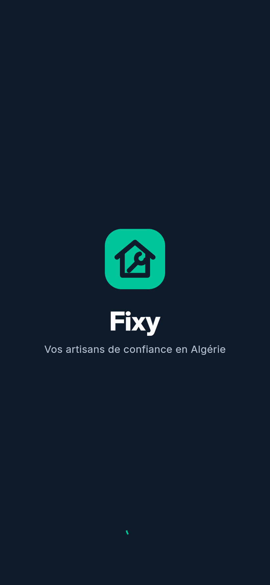
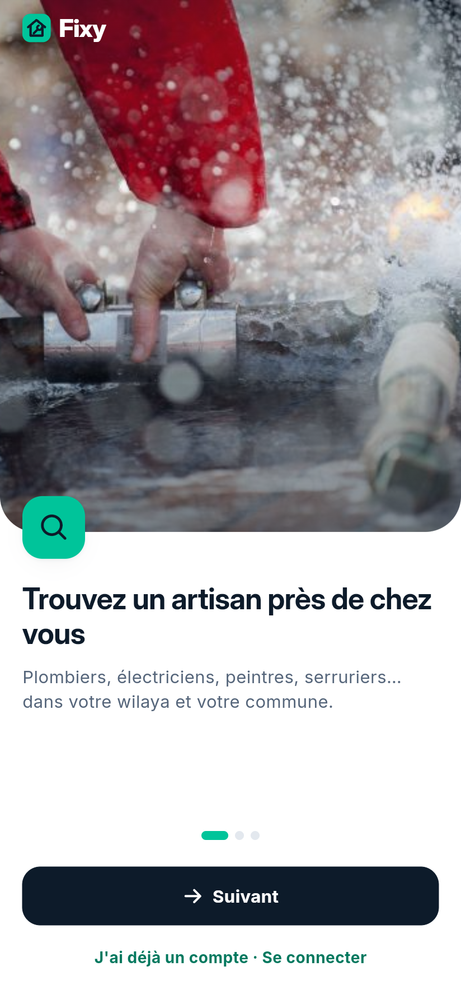
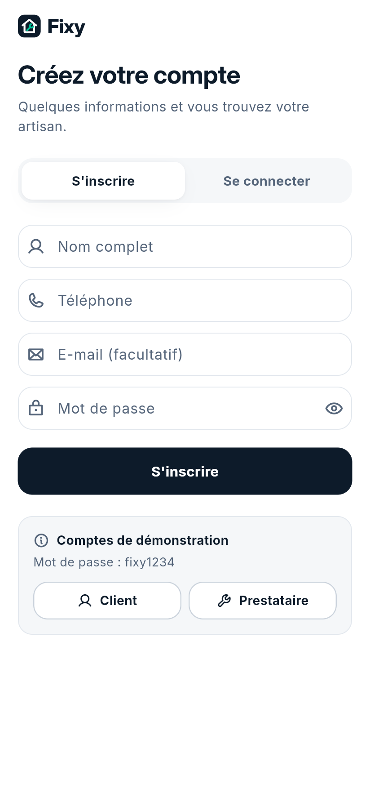
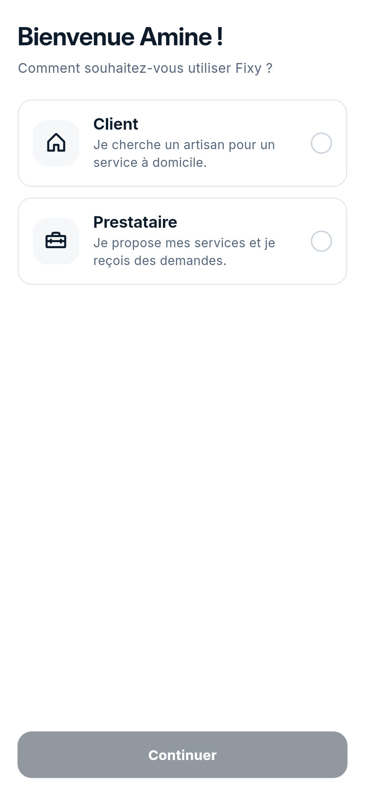
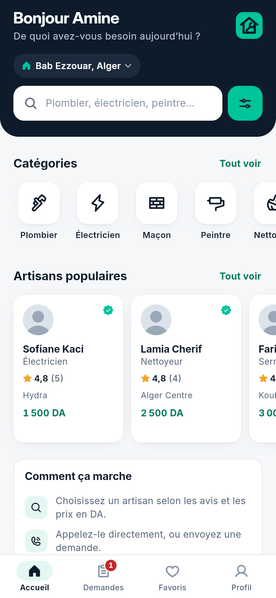
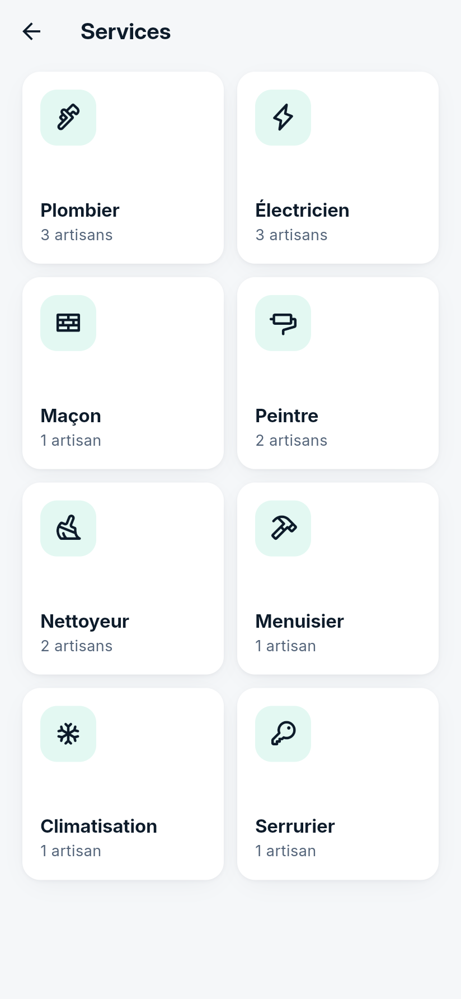
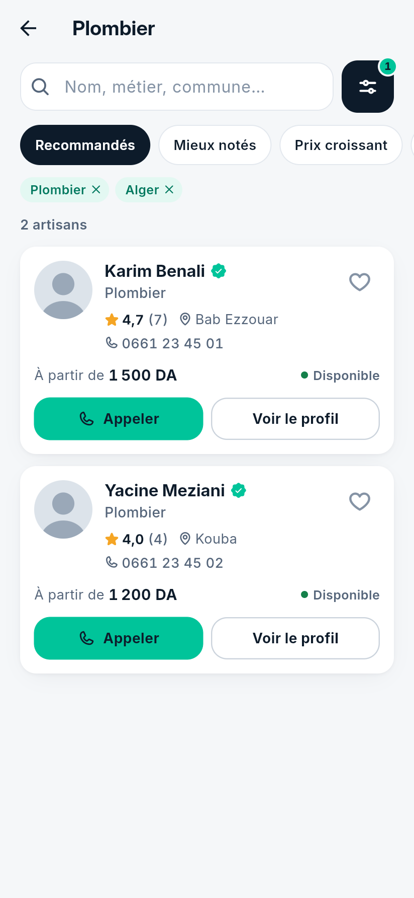
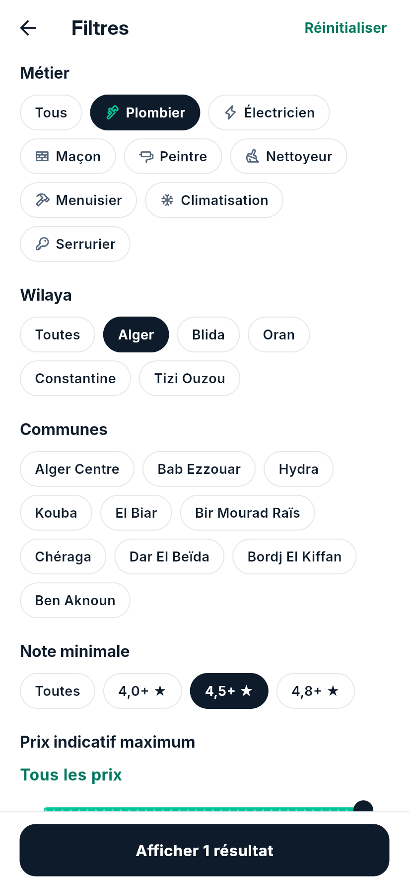
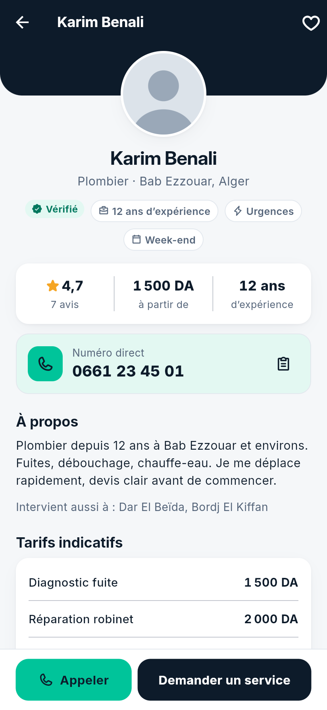
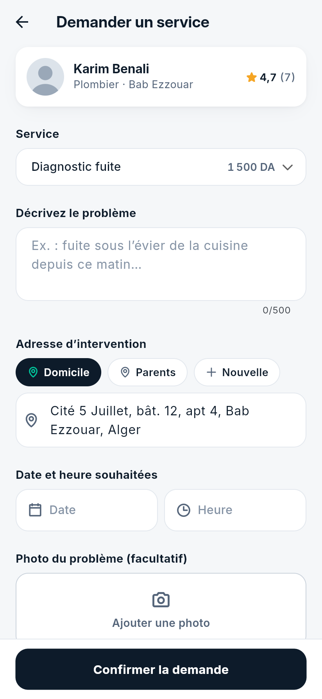
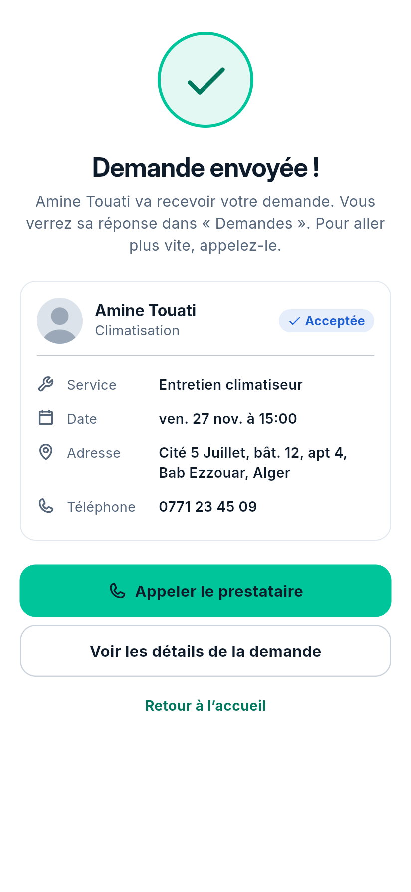
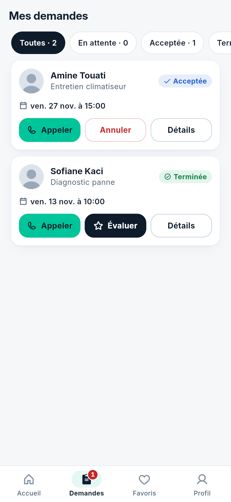
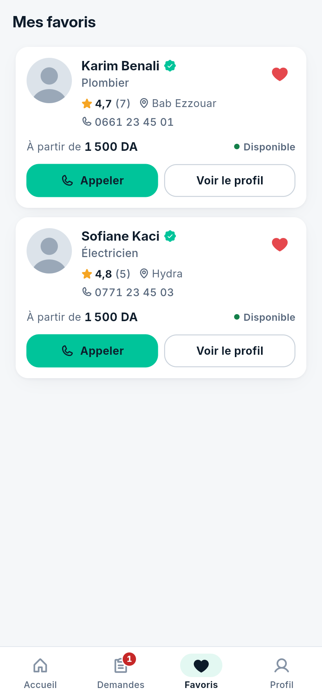
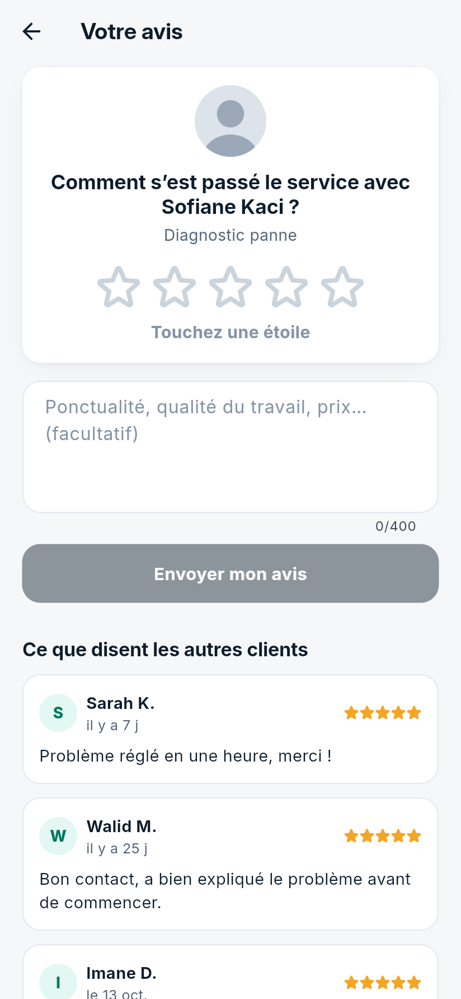
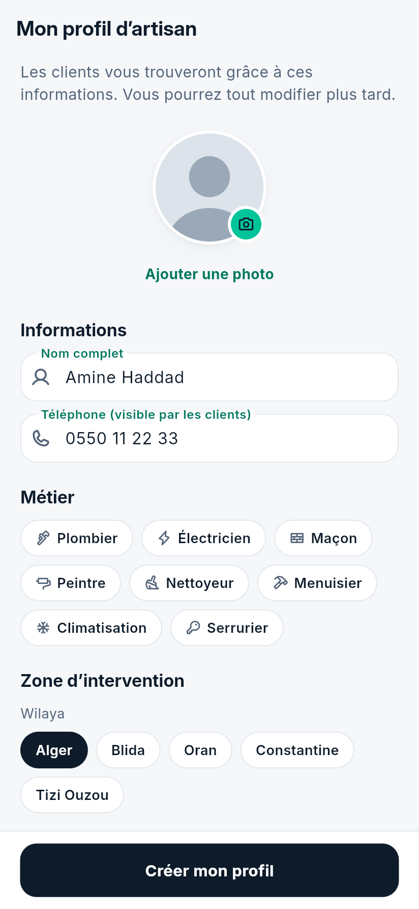
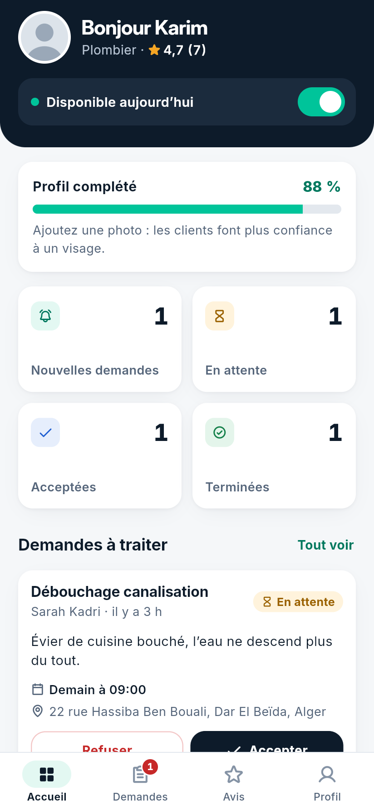
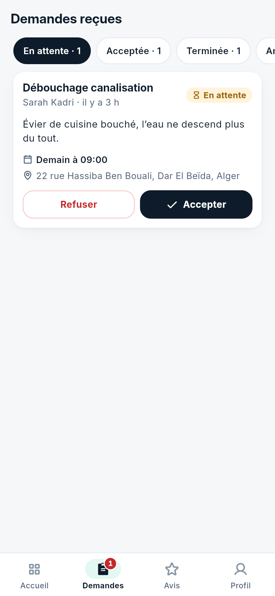
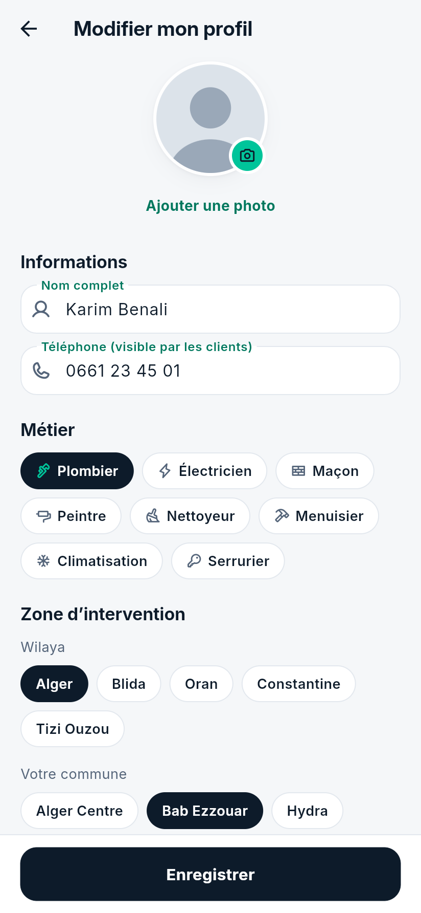
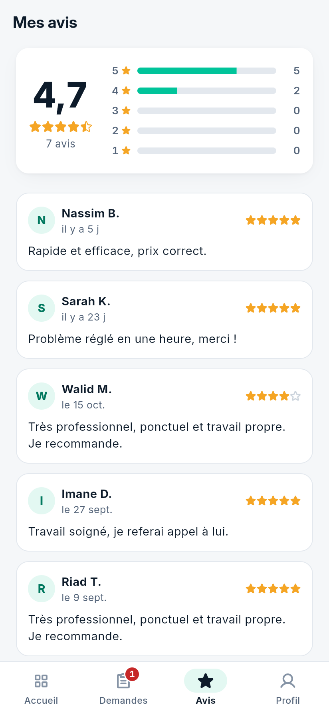
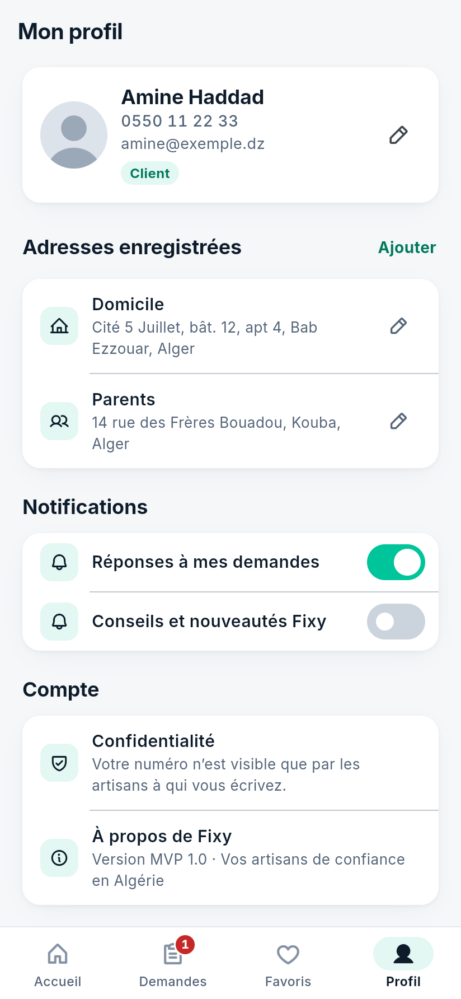